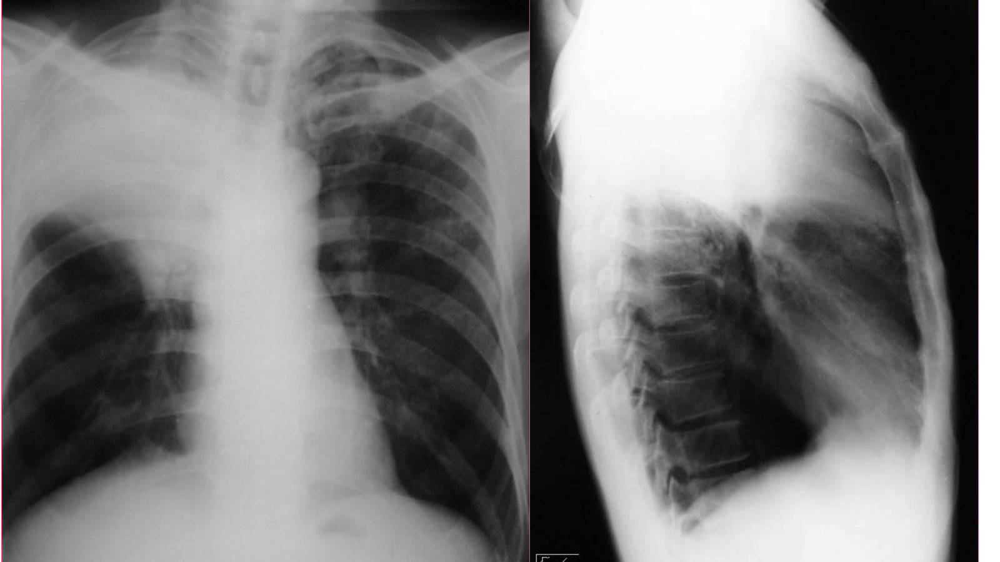
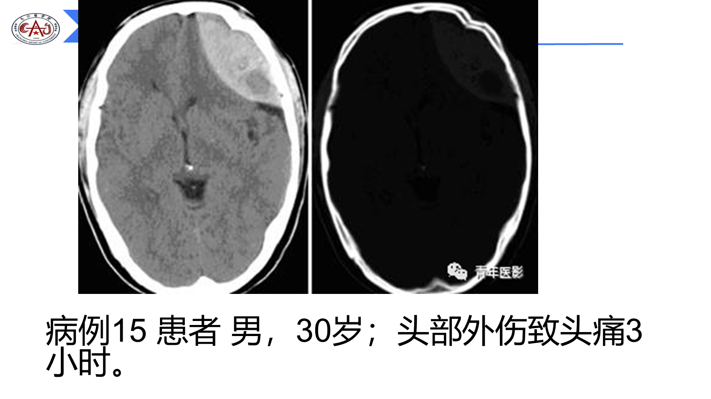

右肺上叶中央型肺癌伴阻塞性肺不张
读片要点
① 右肺上叶呈大片致密影，下缘以水平裂为界、较清晰——说明病灶按肺叶分布，是肺叶范围的实变/不张。
② 右肺门区可见软组织肿块影，与上叶不张连成一片。
③ 水平裂上移（右上叶容积缩小），是右上叶不张的直接征象。
④ 侧位片上，右上叶对应区域密度增高，与前部对应。
为什么是中央型：病变中心在肺门/支气管区，肺门有肿块，外围是被阻塞后的继发改变（不张）。中央型好发于主支气管、叶支气管、段支气管。
该想到的相关征象：若右上叶不张与肺门肿块相连、形成横向的 S 形，就是「横 S 征（反 S 征）」，为右上叶中央型肺癌的特征性表现。
与单纯大叶性肺炎的区别：肺炎按叶分布但肺门无肿块、水平裂不向上移位（反而可能略下移或不变），且抗炎后可吸收；不张是容积缩小。

左侧额部急性硬膜外血肿，伴额部凹陷性骨折
读片要点
① 左侧额部颅骨内板下方见梭形（双凸透镜形）高密度影——这是硬膜外血肿最核心的形态征象。
② 高密度提示急性期（发病 3 小时，符合）。
③ 血肿范围较局限，未越过颅缝（颅缝处硬膜与颅骨粘连紧密，血液不易跨过）。
④ 局部脑组织受压，中线结构轻度向对侧移位。
⑤ 骨窗见左侧额部颅骨内板凹陷、皮质不连续——凹陷性骨折，与课件「硬膜外血肿多伴有邻近部位骨折（90%）」一致。
硬膜外 vs 硬膜下，怎么分
· 形态：梭形/双凸＝硬膜外；新月形＝硬膜下
· 范围：不越过颅缝＝硬膜外；范围广、不受颅缝限制＝硬膜下
· 出血源：骨折致脑膜中动脉破裂＝硬膜外；桥静脉撕裂＝硬膜下
· 损伤类型：加速性＝硬膜外；减速性＝硬膜下
· 病程：昏迷—清醒—昏迷（中间清醒期）＝硬膜外；很少有中间清醒期＝硬膜下
为什么不是硬膜下：本例血肿是梭形、不是新月形，且伴局部骨折，符合加速性损伤致脑膜中动脉破裂的机制。